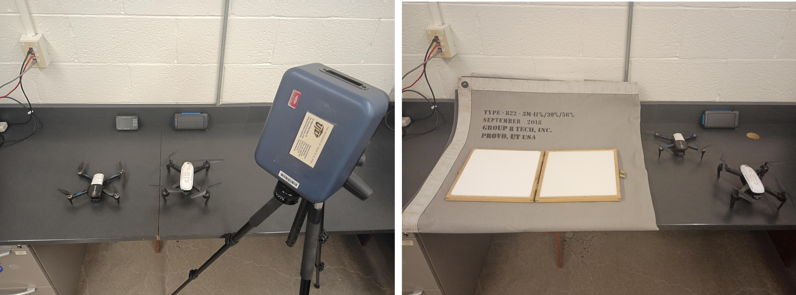
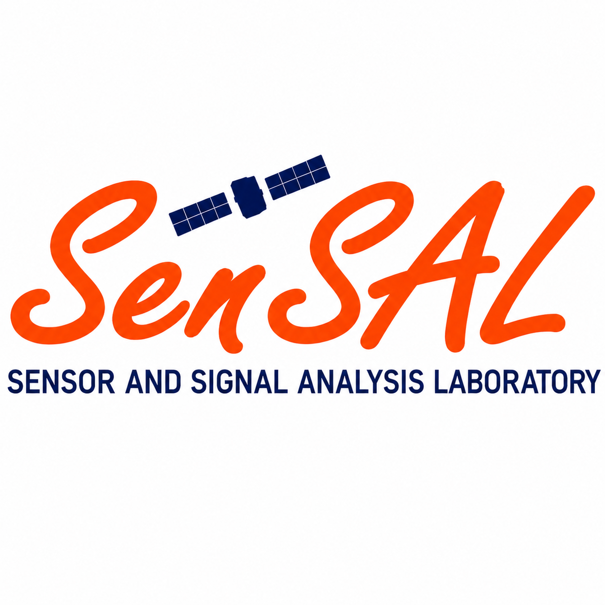
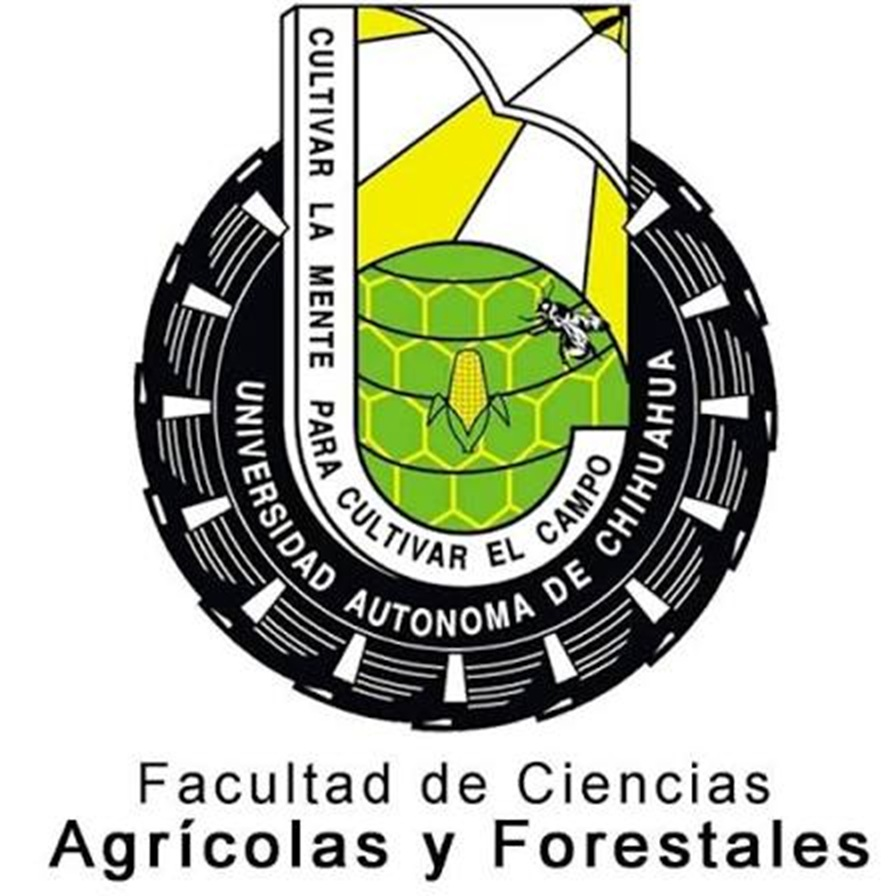

About the Project
The RS & STEM Education project focuses on the development of hands-on educational activities that integrate remote sensing, image processing, field measurements, and agricultural applications.
The project involves satellite observations, UAV imagery hyperspectral sensing, and ground-based measurements to provide students with practical experience in acquiring, processing, analyzing, and interpreting remote sensing data.
Students work with satellite observations, UAV imagery, hyperspectral and multispectral sensing, and ground-based measurements to gain practical experience with the complete remote-sensing workflow.

Project Objectives
- Develop hands-on remote-sensing laboratory activities.
- Integrate satellite, UAV, and field measurements into student learning experiences.
- Apply image processing and data fusion to agricultural monitoring.
- Strengthen collaboration and provide students with interdisciplinary STEM education and research.
Colaborative Research and Education
The project brings together expertise in remote sensing, image processing, agricultural aplications, and STEM education. The collaboration provides opportunities for students to participate in field measurements, data analysis, research activities, and the development of remote-sensing educational materials.
Acknowledgements
The RS & STEM Education project gratefully acknowledges the support of our sponsoring institutions and organizations. Their support enables collaborative research, student training, field data collection, and the development of educational activities in remote sensing and STEM.

